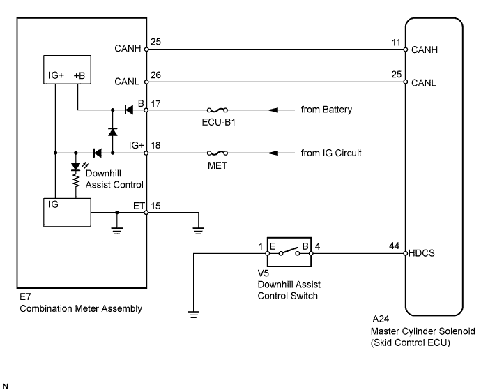

The downhill assist control indicator light comes on when downhill assist control is ready.
HINT:
Even if the downhill assist control switch is pressed, the downhill assist control indicator light will blink and downhill assist control will not be activated under the following conditions:
The transfer indicator switch is in the H4 position.
The VSC system is malfunctioning.
The temperature of the hydraulic brake booster increases and downhill assist control is temporarily canceled.
WIRING DIAGRAM

INSPECTION PROCEDURE
Refer to "Downhill Assist Control Indicator Light Remains On" (Click here).